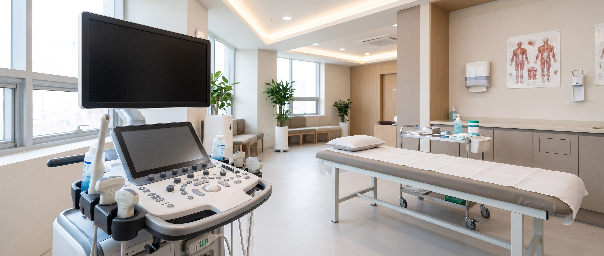
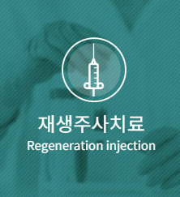
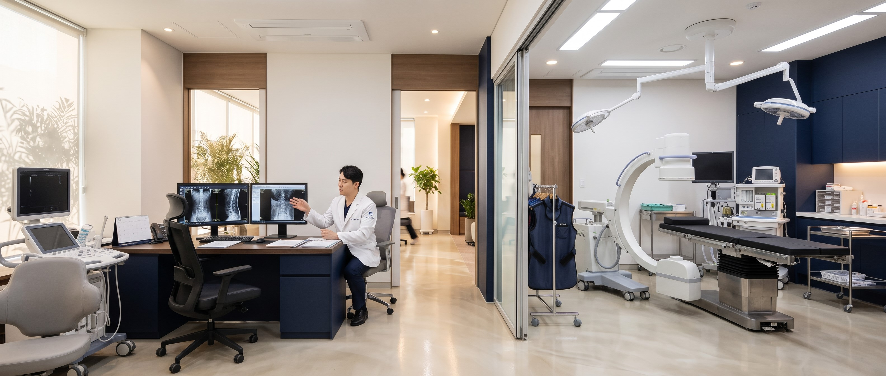
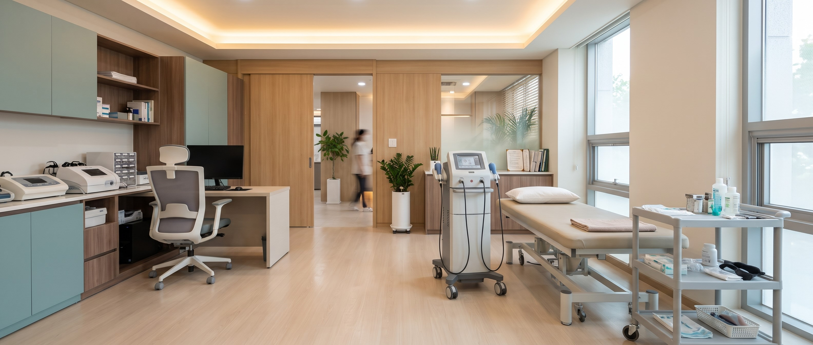

SOO ANESTHESIOLOGY & PAIN MEDICINE

';">목, 허리디스크, 척추관협착증 등의 질환이 있을 경우 신경이 압박되어 통증이 발생합니다. 신경의 염증과 주위 근육조직의 통증을 줄이기 위해서 영상장치를 사용하여 압박된 신경을 정확하게 찾아내어 신경차단 주사치료를 시행합니다.

';">손상된 인대, 힘줄에 약물을 주사하여 새로운 세포증식을 촉진하고 약해진 인대와 관절을 튼튼하게 강화하는 근본적인 비수술 재생 치료법입니다.

';">방사선 노출 걱정 없는 고해상도 근골격계 초음파를 통해 근육, 인대, 신경 및 관절 병변을 실시간으로 확인하며 안전하고 정확하게 약물을 주입합니다.

';">통증과 염증이 있는 인대, 힘줄 부위에 충격파의 기계적 에너지를 전달하여 손상된 부위의 혈액공급을 증가시켜 염증 및 통증을 감소시키고, 조직의 세포 재생과 회복력이 증가되면서 통증이 완화됩니다.